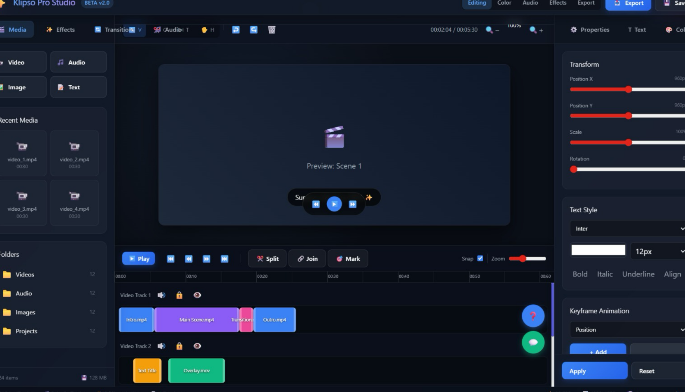
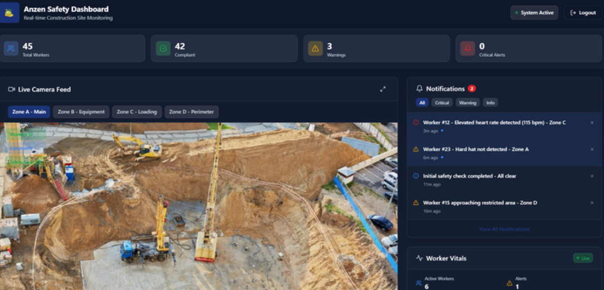
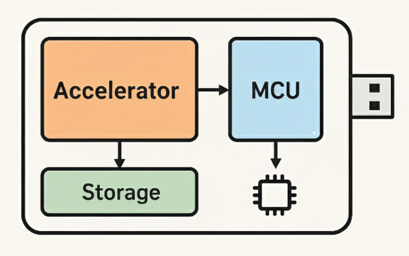
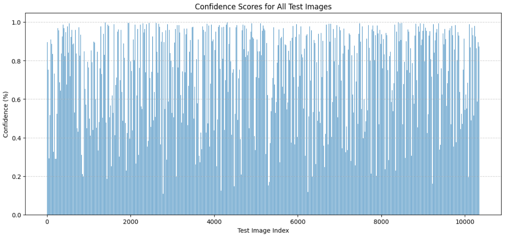

Portfolio Projects
Project 1: Klipso
Description: A hybrid AI-assisted video editing app, that provides speed and efficiency by cutting down time-taking processes while still allowing full creative control.
Skills Applied: Management, Machine Learning, Web Developement.
Project Status: Ongoing.

Project 2: AnzenAI
Description: Smart safety monitoring system integrated with wearable to provide construction sites safety.
Skills Applied: Machine Learning, IoT.
Project Status: Ongoing.

Project 3: PocketAI
Description: A low resource, environmentally sustainable solution created to provide ai modules across multiple disciplines by integrates hardware system with intelligent systems
Skills Applied: Machine Learning, IoT.
Project Status: Ongoing.

Project 4: Who's that K9?
Description:Dog Breed Classification using Vision Transformer. Developed a hybrid CNN + ViT model and an enhanced DeiT model for image classification of dog breeds.
Skills Applied: Machine Learning.
Project Status: Completed. In process of publication.
Link to repo: Click to open repo
